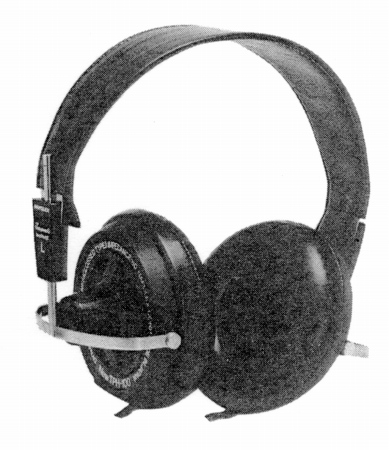
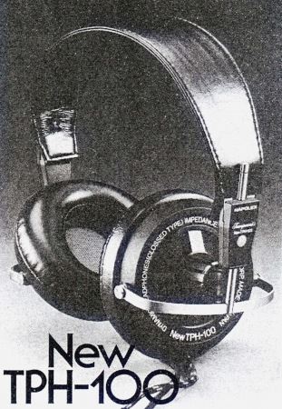
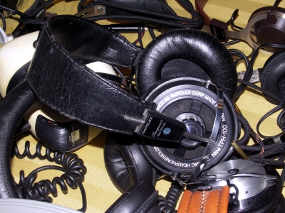

NEW TPH-100


■価格 7,200円■型式 ダイナミック型■振動板 66�o 特殊コーン■インピーダンス 8Ω■再生周波数帯域 20-20,000Hz■許容入力 500mW■感度 105ｄB/mW■コード 2.5ｍ4芯袋打ちコード■重量 310g（コード含まず）■発売 1977年頃■販売終了 1980年頃■備考

上記写真はイベントでユーザー様の許可を得て撮影しました。
ナポレックスのインデックスへ